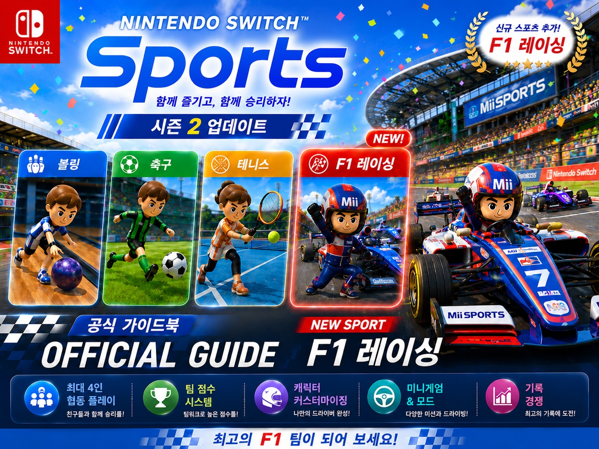
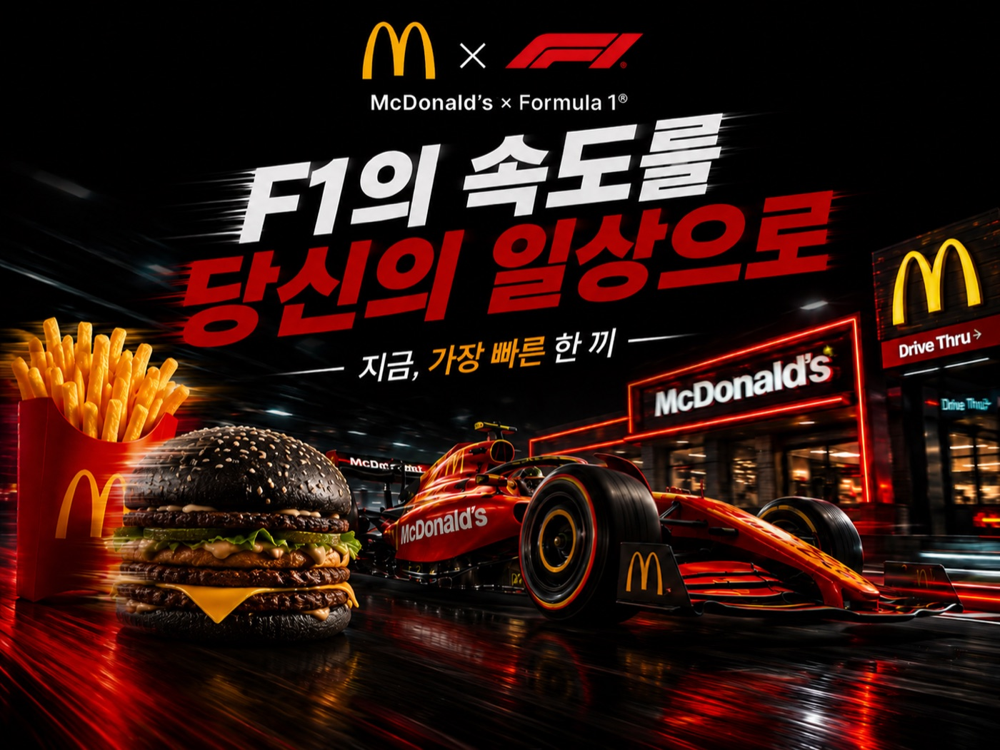
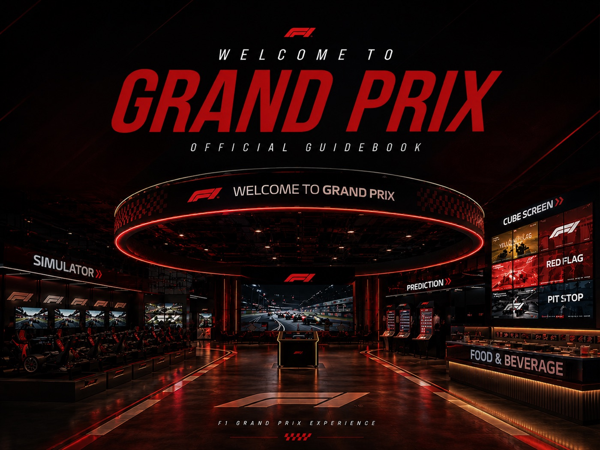
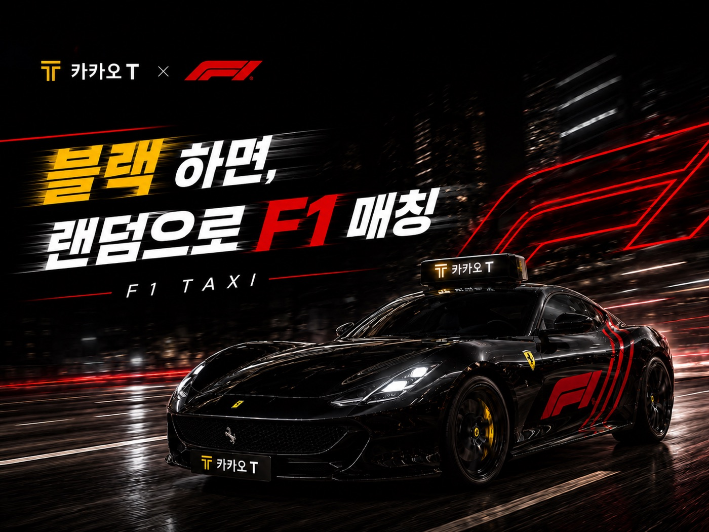
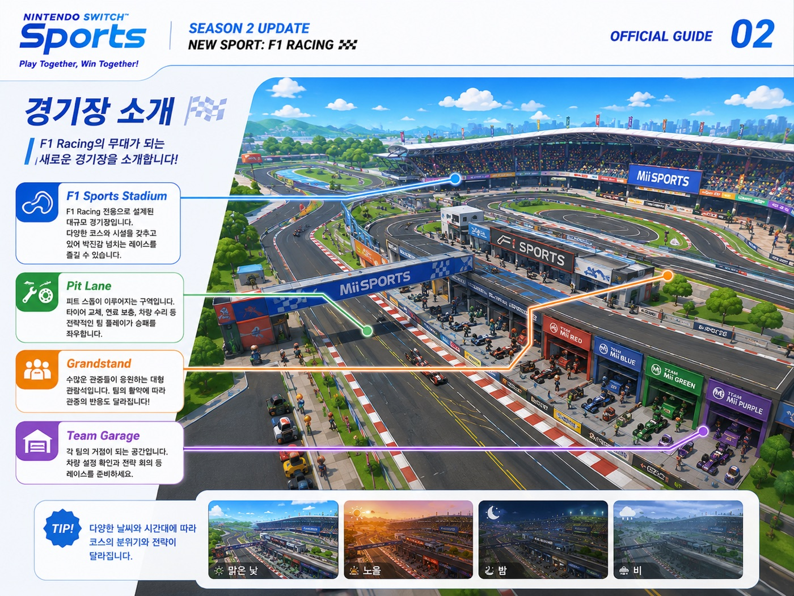
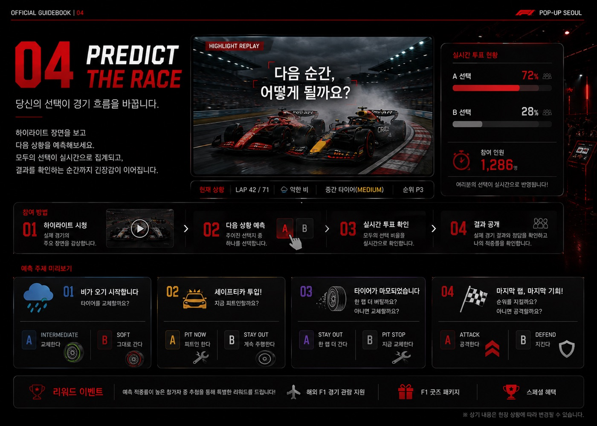

KNN AI 아카데미 우수 콘텐츠상 · 2026.07
AI 자유 창작 애니메이션
AI로 만든 영상은 샷이 넘어갈 때마다 캐릭터와 톤이 흔들립니다. 보여줄 대상을 먼저 정하고, 각 화면의 의미와 동작, 색, 표정, 각도, 조명 톤을 미리 설계한 다음, 샷마다 공통 프롬프트를 붙여 일관성을 통제했습니다. 스토리 창작부터 연출, 제작까지 혼자 했습니다.
숏폼 작업물
중국판 인스타그램 샤오홍슈에서 2년째 계정을 혼자 운영하고 있습니다. 기획, 촬영, 편집, 업로드는 물론 광고주 커뮤니케이션과 단가 협상까지 한 사람 안에서 끝납니다.
2026.07 기준
2026.08 기준 · 합계 지표
건수가 많아 미집계
아래 네 편은 기획부터 촬영, 편집, 업로드까지 전부 혼자 만들었습니다. 화면을 누르면 원본에서 바로 재생됩니다.
KNN AI 아카데미 우수 콘텐츠상 · 2026.07
AI로 만든 영상은 샷이 넘어갈 때마다 캐릭터와 톤이 흔들립니다. 보여줄 대상을 먼저 정하고, 각 화면의 의미와 동작, 색, 표정, 각도, 조명 톤을 미리 설계한 다음, 샷마다 공통 프롬프트를 붙여 일관성을 통제했습니다. 스토리 창작부터 연출, 제작까지 혼자 했습니다.
7,833
좋아요 7,833개 · 저장 수까지 합치면 9,600개 — 계정 최고 기록
샤오홍슈에 한국인의 올리브영 추천 영상은 포화 상태인데 “올리브영 알바생의 추천”은 없었습니다. 그 화자가 되려고 중화권 고객 비중이 높은 부산 광안리 지점에 취업했고, 근무하면서 손님이 실제로 찾는 제품과 참고하는 플랫폼을 파악해 추천 리스트에 반영했습니다. 나중에는 이 영상을 캡처해 매장으로 찾아온 손님을 직접 응대했습니다.
원본 게시물5,196
좋아요 5,196개 · 광고주 협업 콘텐츠
제품을 앞세운 영상일수록 초반 이탈이 빨랐습니다. 광고로 보이는 순간 반응이 멈춘다고 판단해 구조를 뒤집었습니다. 초반은 일상 상황, 제품 정보는 중반 이후로 미루고, 브리프가 요구한 성분은 하나도 빼지 않되 성분 설명을 사용감 중심 표현으로 바꿔 일상 흐름에 심었습니다. 광고주의 요구는 지키고 전달 방식만 바꾼 겁니다.
원본 게시물1,083
좋아요 1,083개 · 중국 현지 초청 협업
중국 광저우 교환학생 기간에 선전 팝업스토어 초청을 받아 제작했습니다. 한국 브랜드가 중국 소비자 앞에 설 때 가장 먼저 내세우는 무기가 아티스트와 캐릭터 IP라는 걸, 의뢰를 반복해 받으며 확인한 자리입니다.
원본 게시물샤오홍슈는 외부 사이트에 영상을 심을 수 없어 원본 게시물로 연결했습니다. 목록 전체는 계정 프로필에서 바로 보실 수 있습니다.
협업이 100건을 넘어가면서 개별 집계는 하지 않았습니다. 아래는 그중 일부입니다.
중국 현지에서 진행한 협업이 세 건 있습니다. 선전 농심 팝업스토어 초청 광고, 思念(시니엔)과 루피의 콜라보 탕위안 광고, 롯데식품 광고입니다. 광고주가 계약 조건으로 거는 ‘동종 제품 1~2주 게시 제한’을 지키며 경쟁 브랜드 협업의 게시 시점을 조율하는 일도 제 몫이었습니다.
F1 팝업 캠페인. 개인 과제로 낸 원안이 조별 과제 논의에서 팀 기획으로 채택됐습니다. 기획안 논리구조 재설계와 발표 대본, 브랜드 제휴 가이드북 4종, 방문자가 팝업 공간을 가상으로 이동해보는 인터랙티브 프로토타입을 혼자 만들었습니다.






KNN AI 아카데미 우수 콘텐츠상 · 2026.07
부산대학교 좋은 수업 취재 공모전 최우수상 · 2022.12 — 과거 수상작이 전부 뉴스 리포팅 형식인 걸 확인하고 육성 시뮬레이션 게임 포맷으로 변주
재외동포청 워킹홀리데이 콘텐츠 공모전 우수상 · 2024.02 — 영상통화 화면과 일상 푸티지를 교차 편집
샤오홍슈 단독 운영 · 2024.04~현재
대만 20만 구독자 유튜브 채널 콘텐츠 보조 · 2023.03~2024.09 — 경쟁 채널 분석으로 신규 소재를 제안하고, 운영자 반대에 법적 사전 조사와 타 채널 데이터로 대응. 촬영 현장 한중 통역 전담
개인 유튜브 채널 단독 운영 · 2023.05~2024.02 — 최고 도달 구독자 9,500명
Premiere Pro(주력), CapCut, Photoshop(GTQ 1급), Illustrator
중국어 HSK 5급 · 대만 워킹홀리데이 6개월 · 중국 광저우 교환학생 2025.09~2026.02
부산대학교 미디어커뮤니케이션학과 · 중어중문학과 부전공 · 학점 3.94/4.5